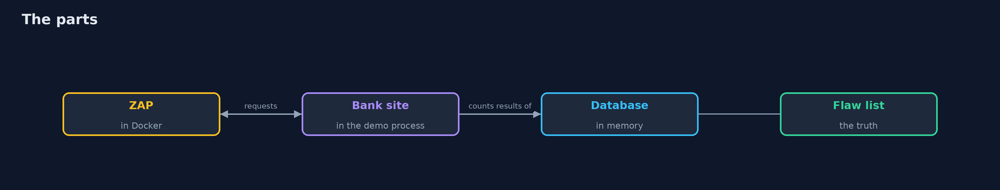
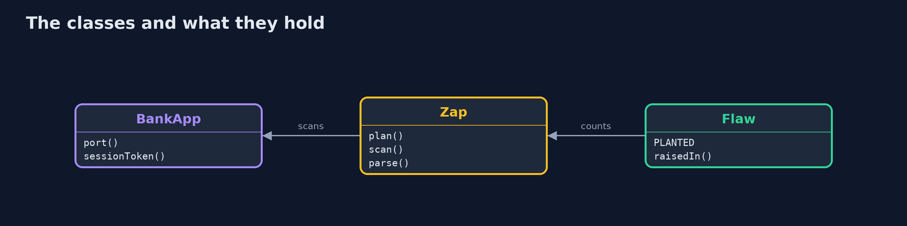
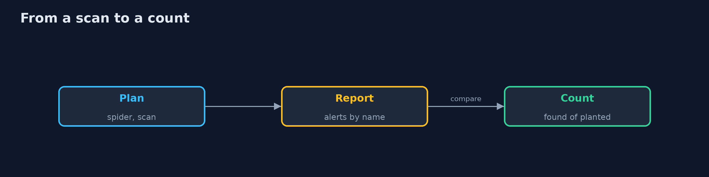
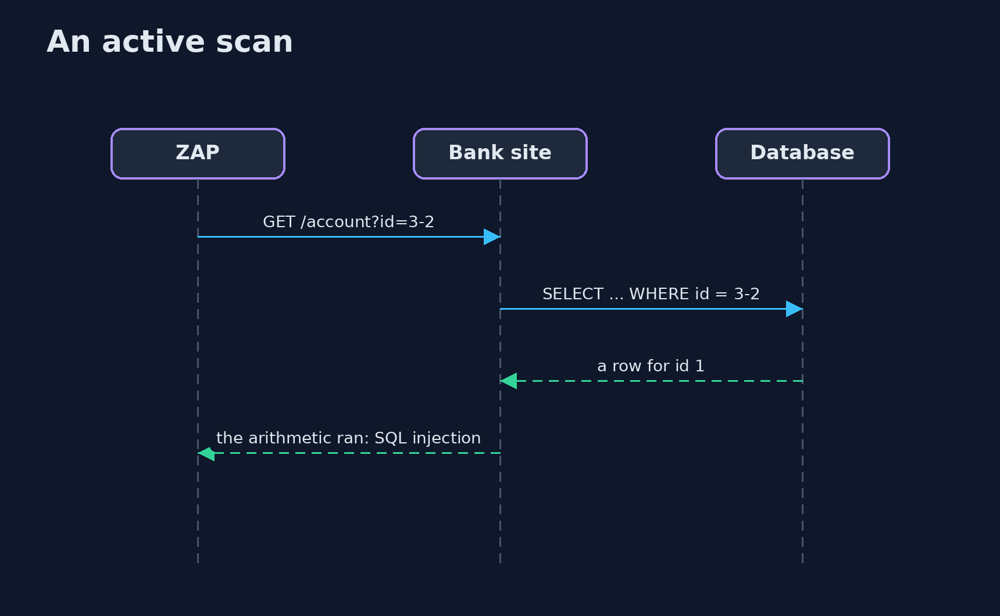

Dynamic Analysis
src/main/java/com/jk/explore/security/dast/
├── Alert.java One kind of alert in a ZAP report: its name, its risk (3 high, 2 medium, 1 low, 0 informational) and the paths it was raised on
├── BankApp.java A small bank web application, run in this process
├── DastDemo.java
├── Flaw.java A flaw planted in the application: what a scanner should raise, and on which path ({@code null} for any path)
├── Sh.java Runs a program and returns what it printed, whether it worked or not
└── Zap.java OWASP ZAP in Docker, driven by an automation plan: spider, passive rules, and optionally an active scan limited to chosen rules
A small bank web application runs with 9 planted flaws, one of them behind the login; a passive ZAP scan finds the 5 cookie and header flaws and none of the 4 script and query flaws, an active scan without a login finds 2 of 3 script flaws and the query flaw and never reaches the admin page, a logged-in scan finds all 9 of 9, and the fixed application raises none of the planted flaws, with one medium alert left (no anti-CSRF token) for a person to judge.
Dynamic analysis tests the running application from outside, as an attacker would: it crawls the pages, reads the responses and sends attack strings. This project starts a small bank web application in Java with 9 planted flaws (reflected script, a query built with a string, cookie flags, missing security headers), one of them behind the login, and scans it with OWASP ZAP in Docker driven by an automation plan. A Java program starts the application and ZAP (docker pull ghcr.io/zaproxy/zaproxy:stable, about 2 GB once) and counts what each scan found against the planted truth; the demo is tagged integration: ./gradlew integrationTest.
What it shows: - Passive. A scan that only reads responses finds the 5 cookie and header flaws and none of the script and query flaws. - Active, anonymous. Attack strings find 2 of 3 script flaws and the query flaw; the admin page is never reached. - Active, logged in. With the session cookie the scan finds 9 of 9. - The fixed application. Nothing planted is raised; one medium alert (no anti-CSRF token) remains for a person to judge. - The bill. A scanner finds what it can reach, and a clean scan is not a proof.
Maps to: OWASP Top 10 A03 Injection and A05 Security Misconfiguration · OWASP ASVS V5, V14 · NIST SSDF PW.8 · CWE-79, CWE-89.
The idea in everyday terms
A building inspector who tries the doors from the street. She finds the unlocked ones she can see, and only if she has a key does she walk the corridors behind the lobby. Telling her the building is clean after she tried the front doors would be an overstatement.
The scenario
A bank's web application has a search page, an account page, a login and an admin area. The demo starts it with known flaws, scans it three ways, fixes it and scans it again.
Run
./gradlew run
The demo tells the story in 5 acts, each printing exact numbers that the tests check:
| Act | What it shows |
|---|---|
| 1. The application under test | A small bank site has 9 planted flaws, one of them behind the login. |
| 2. Passive and anonymous scans | A passive scan finds the 5 cookie and header flaws; an anonymous active scan finds 2 of 3 script flaws and the query flaw. |
| 3. A logged-in scan | With the session cookie the active scan finds all 9 planted flaws. |
| 4. The fixed application | After the fixes nothing planted is raised and one medium alert remains. |
| 5. The bill | A scanner finds what it can reach, and a clean scan is not a proof. |
Test
./gradlew test
13 tests in BankAppTest, DemoRunsTest, ZapAndFlawTest. The application, the report parsing and the plan are tested with no tools. The demo runs Docker and ZAP (./gradlew integrationTest).
What the simulation got right, and what it left out
ZAP and the application are real; the application is a small made-up bank site that runs in the demo's own process. The demo prints counts and flaw names, never addresses or ports.
Technologies and versions
Every version below is pinned in the project's build files and was the latest stable release when the project was built.
| Technology | Version | Used for |
|---|---|---|
| Java | 25 | the language and runtime; a Gradle toolchain finds or downloads the JDK |
| Gradle | 9.8.1 (wrapper) | build and run; nothing to install, the wrapper downloads it |
| tools.jackson.core:jackson-databind | 3.1.5 | library the code uses |
| com.h2database:h2 | 2.5.252 | library the code uses |
| org.junit.jupiter:junit-jupiter | 6.1.3, set by junit-bom | JUnit 5: the tests (tests only) |
| org.junit.platform:junit-platform-launcher | 6.1.3, set by junit-bom | JUnit platform launcher, which Gradle needs to run the tests (tests only) |
| videokit | repository tool (tools/videokit) |
the narrated video and animation: Piper en_US-amy-medium, speed 0.8, longer pauses (the amy-slow voice) |
Learning Material
| Document | What it is for |
|---|---|
| Problem statement | the situation and what the project must show |
| Prerequisites | what you need to know first |
| Dynamic Analysis, explained | the acts in prose |
| Session guide | a one-hour lesson with exercises |
| Animated walkthrough | the acts step by step, narrated |
| Threat model | what is protected, who could harm it, and how, using STRIDE |
| Spec | what this project must be true of |
| Expected output | the golden demo output every test and every port checks against |
The idea in one picture
ZAP attacks the running application from outside.

Where each piece sits
The application, the scanner and the truth.

How the data moves
The report is compared with the planted flaws.

Who calls whom, in order

Video
video/dast-explained.mp4 (with .m4a audio and .srt subtitles) is built by video/build_video.sh. Rendered media is not committed.
What it costs
- A scan sees only what it can reach, so it needs logins and a good crawl.
- Active scans send attacks, so they run against a test copy, never production.
- Alerts need judging; risk and confidence are guides.
- A scan takes time and a Docker image of 2 GB.
- A clean result is not a proof.
When this is too much
A static site with no forms needs no active scan. Use DAST when the application takes input, has a login, or is built from parts that static analysis cannot see together.
Where you have already met this
- A yearly penetration test as the only test.
- A scan that never logged in.
- A report with hundreds of informational alerts.
- An active scan run against production.
Where this sits
This is a project of the devsecops-pipelines module, with sast and secret-scanning. SAST reads the source; DAST attacks the running application.